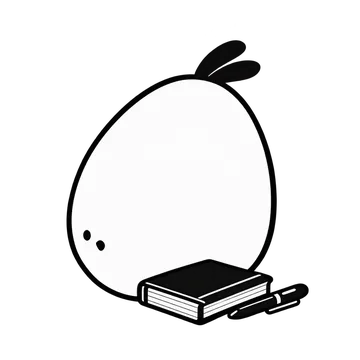
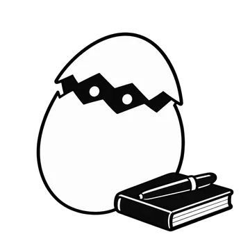
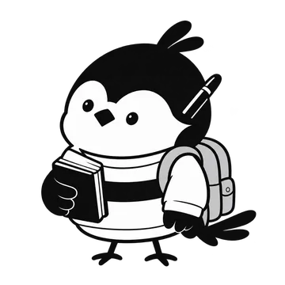
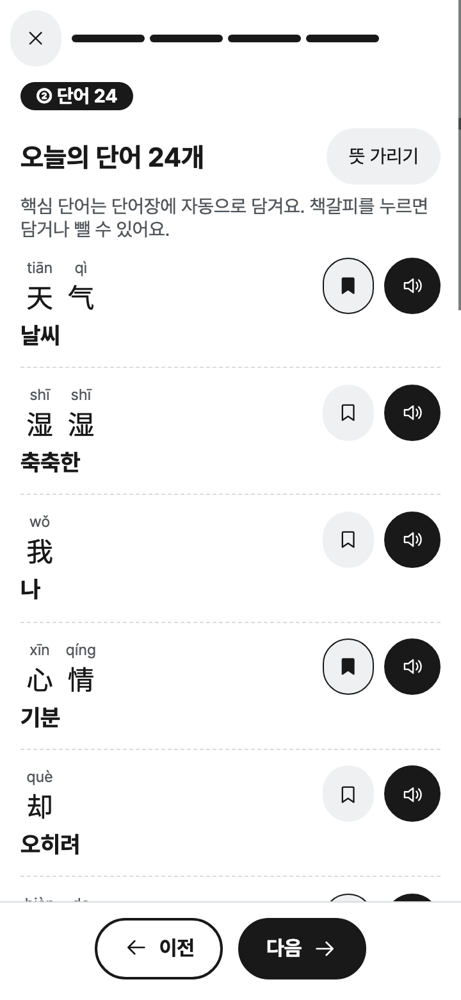
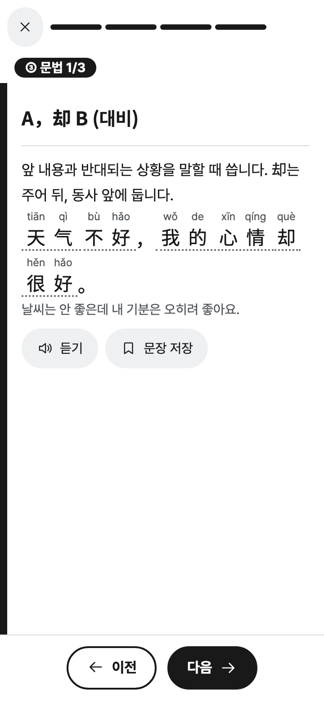
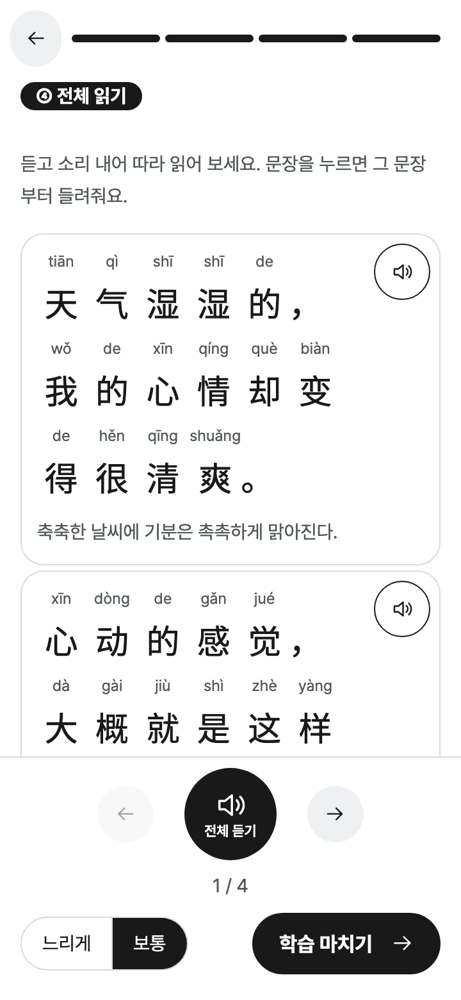
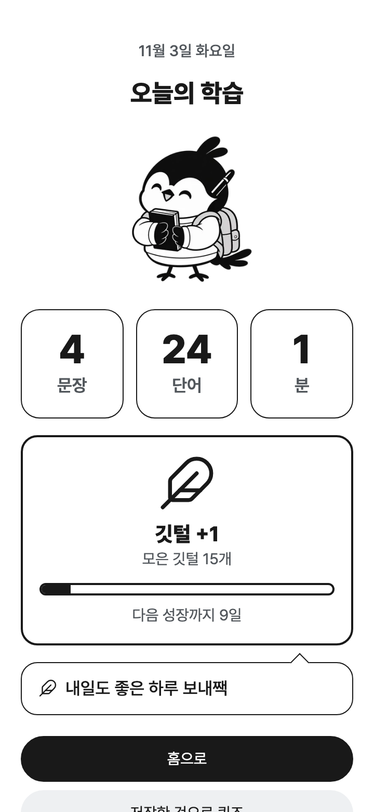

PO 직군 · 바이브 코딩 프로젝트 · 2026.10.29 – 11.03
나의 일상이
새로운 언어로
확장된다
일기를 쓰면, 그 일기로 외국어를 듣고 말하며 배우는 앱
문제 정의
왜 만들었나
외국어는 오래 배웠는데, 내 하루는 그 말로 못 한다.
말이 안 나온다영어를 오래 배웠지만 말해 본 적은 거의 없다. 듣기·읽기는 되는데 말하기만 막혀서 답답했다.
남의 이야기라 안 남는다듀오링고로 중국어를 1년 넘게 했다. 예문은 어색하고, 정작 내 상황에서는 단어가 안 떠올랐다.
그래서 내 일기로일기는 이미 쌓이고 있는 내 하루다. 그 문장을 그대로 외국어로 말해 보면, 그게 내 언어가 된다고 생각했다.
첫 사용자 · 나와 내 주변 사람자기 전 5분, 방 안에서
내가 정한 것번역기나 단어 앱과 경쟁하지 않고, “내 일기를 교재로”라는 한 가지만 푼다
서비스 소개
어떤 앱인가
내 일기가 외국어 학습 카드가 된다. 화면을 눌러 번역되는 모습을 보세요.
1 쓰기오늘 있었던 일을 한국어로 일기처럼 쓴다.
2 배우기외국어로 바뀐 문장을 듣고 따라 말하고, 단어와 문법을 익힌다.
3 키우기공부를 마치면 깃털이 쌓이고 앱 속 새가 자란다.
쓰는 말 → 배울 말한국어 → 중국어한국어 → 일본어중국어 → 일본어영어는 다음에
내가 쓴 일기오늘은 비가 와서 카페에서 책을 읽었다.
번역 ↓
중국어로 바뀐 문장▶ 듣고 따라 말하기
今天下雨，
我在咖啡馆看书。
이 문장에서 나온 단어咖啡馆 · 카페下雨 · 비가 오다看书 · 책을 읽다
내가 정한 것쓰고, 배우고, 키우는 세 단계로 단순하게 · 한 화면에 모든 기능을 넣지 않는다
서비스 소개 · 시연
직접 써 보면 이렇다
장면을 눌러 보세요. 그 부분만 바로 재생된다.
왼쪽 장면을 눌러 보세요. 영상에는 소리가 있다.
내가 정한 것핵심 흐름(쓰기 → 번역 → 듣고 말하기 → 복습)을 짧은 장면으로 보여 준다
서비스 소개 · 내 이야기를 지키는 장치
내 일기답게 쓰려고 넣은 것
번역이 내 말과 달라지면 몰입이 깨진다. 눌러서 보세요.
겪은 일여자친구 이름이 ‘우동’인데, 일기에 쓰면 음식 우동으로 번역됐다. 이름을 풀어서 쓰면 더 이상 내 일기가 아니었다.
그래서 넣은 것내 용어사전을 만들고, 문맥을 보고 이름인지 음식인지 구분하게 했다. 구분이 어려우면 내가 고를 수 있다.
겪은 일일기는 말투가 자유롭다. 어떤 단어는 틀리게 번역되고, 그 언어로는 자연스럽게 바꿔야 하는 말도 있다.
그래서 넣은 것애매한 문장에는 ‘확인 필요’를 붙이고, 펼쳐서 왜 그렇게 번역했는지 볼 수 있게 했다.
겪은 일앱을 열지 않고도, 저장해 둔 단어를 복습하고 싶을 때가 있을 것 같았다.
그래서 넣은 것저장한 단어와 문장을 PDF로 뽑아서, 따라 써 보며 공부할 수 있게 했다. 가장 잘 넣었다고 생각하는 기능이다.
내가 정한 것번역이 편하더라도 내 이야기를 바꾸지 않는다 · 헷갈리는 곳은 내가 고르게 한다
서비스 소개 · 키우기
공부한 날이 쌓이면 새가 자란다
점수나 순위 대신, 키우는 재미로 다시 오게 하고 싶었다.



100일째
이야기 작가새
깃털이 모일수록 다음 모습이 궁금해졌다. 오래 써 보지는 못해서, 새가 자라는 걸 끝까지 본 건 아니다.
알깨어나는 알아기새유치원새초등학생새중학생새고등학생새대학생새어른새이야기 작가새
내가 정한 것꾸준함을 점수로 압박하지 않고, 쌓이는 느낌으로 보여 준다
설계 판단 · 만든 순서와 변화
처음엔 어땠고, 어떻게 달라졌나
만든 순서번역→듣기·읽기→단어·문법→새 키우기
기준은 하나였다. 내 일기가 외국어가 되고, 그 문장을 소리 내어 읽어 볼 수 있는가. 단계를 눌러 보세요.
그때 모습한국인이 중국어를 배우는 일기 앱. 차분한 디자인에, 결과는 한 페이지에 길게 이어졌다.
써 보며 든 불편애정이 안 생겼다. ‘우동’이 음식으로 번역돼 몰입이 깨졌고, 쌓이는 느낌은 달력에 표시되는 정도였다.
바꾼 것이름을 Say My Day로 바꾸고, 쓰는 말과 배울 말을 고르게 했다. 내 용어사전과 맥락 선택도 넣었다.
계기여자친구가 중국인인데 일본어를 배우고 싶어 했다. 앱을 따로 만드는 대신 언어 조합을 고르게 했다.
바꾼 것쓰는 화면을 그림일기처럼 바꾸고, 앱 속에 작은 새를 넣었다.
계기디자인이 일기와 상관없이 정적이라 몰입이 약했다. 키우는 요소가 있으면 애정이 생길 것 같았다.
바꾼 것길게 이어진 결과 페이지를, 카드 한 장씩 넘기는 방식으로 바꿨다.
계기스크롤 호흡이 너무 길어서 끝까지 안 읽게 됐다.
같이 바꾼 것기본 음성이 기계음처럼 끊겨서 자연스러운 음성으로 바꿨다. 말하기가 이 앱의 핵심이라서.
설계 판단 · 뺀 것
일부러 뺀 것
있으면 좋아 보이지만 이유가 있어서 뺐다. 카드를 눌러 이유를 보세요.
뺄지 정한 기준 ① 일기가 공부로 이어지는 흐름에 꼭 필요한가 ② 내 일기가 남에게 보일 위험은 없는가 ③ 제대로 되는지 확인할 수 있는가
내가 정한 것세 기준에 맞지 않으면 넣지 않는다 · 눈에 띄는 기능보다 일기의 안전을 먼저 둔다
설계 판단 · 맞바꾼 것
무엇을 얻고, 무엇을 잃었나
바꿀 때마다 좋아진 점과 나빠진 점이 있었다. 카드를 눌러 보세요.
내가 정한 것누를 것을 줄이는 대신, 넘기는 횟수가 늘어나는 건 받아들인다 · 이게 맞는지는 다음 장에서 숫자로 본다
평가 리포트
잘 만들었는지 어떻게 확인했나
같은 일기로 예전 화면과 지금 화면을 비교했다.
한 화면에 눌러야 할 것의 수4개 결과의 평균
스크롤해야 하는 가장 긴 길이화면 몇 개 분량인지
문장 속 단어가 목록에 든 비율예시 결과 기준
끝까지 가는 데 누르는 횟수늘어난 것도 그대로 보여 준다
못 한 것사람에게 써 보게 하는 테스트. 그래서 쓰기 편한지, 이해가 잘 되는지는 재지 못했다.
예전 쭉 이어진 스크롤




내가 정한 것못 잰 것은 못 쟀다고 말한다 · 넘기는 횟수가 늘어도 괜찮은지는 사람에게 다시 묻는다
AI 활용 과정 ①
AI와 어떻게 일했나
AI가 제안하고, 내가 승인한 뒤 한 장씩 만들었다. 탭을 눌러 보세요.
작업 카드 66장지시문 5번 수정다른 AI의 독립 감수
내가 요구→AI가 검토·제안→내가 승인→만들기→시험→기록
카드 한 장 = 기능 하나 = 새 대화 하나처음엔 큰 기능을 한 번에 맡겼다가 결과가 흩어지고 화면이 깨졌다. 기능 단위로 쪼개니 점검이 쉽고 토큰도 아꼈다.
실제로 한 요청“사용자 입장과 UI/UX 전문가 입장에서 이 학습 부분 설계를 심도 있게 검토해서 제안해줘. 이게 이 앱의 핵심이야.”
이미지 트랙Claude Code가 이미지 지시문 작성→GPT가 이미지 생성 (오래 걸림)→앱에 적용
기능 트랙이미지를 기다리는 동안→이미지와 상관없는 기능부터 구현
이중 트랙이미지는 시간이 오래 걸려서, 그동안 기다리지 않고 다른 기능을 만들었다.
GPT로 독립 감수Claude로만 감수할 때보다 놓친 걸 찾아 줘서, 감수의 빈틈이 메워졌다.
시험은 따로 띄운 서버에서시험용 가짜 데이터가 진짜 데이터에 섞인 사고가 난 뒤에 넣은 규칙이다.
키는 화면·저장소에 올리지 않는다AI 서비스 이용 키가 새면 비용과 보안 사고가 된다. 올리기 전에 검사한다.
‘배포 진행’이라고 말한 뒤에만 올린다배포하면 바로 사용자에게 반영된다. 이번 준비 중에도 승인 전 업로드는 막혔다.
스킬로 절차를 고정디자인 기준 적용, 글자와 배경의 색 대비 검사 같은 절차를 AI에게 가르쳐 매번 같게 했다.
내가 정한 것AI는 만들고, 무엇을 만들지와 언제 올릴지는 내가 정한다
AI 활용 과정 ②
번역이 덜 틀리게 어떻게 했나
AI에게 주는 지시문(프롬프트)을 5번 고쳤고, AI가 틀려도 앱이 걸러 내게 했다. 버전을 눌러 보세요.
문제규칙이 통하는지 모른다. 처음에는 AI를 부르지 않고 확인하고 싶었다.
바꾼 것초급 수준, 자연스러운 번역, 애매한 말 표시, 일기에 없는 내용 금지. 규칙대로 만든 가짜 결과로 먼저 점검했다.
문제문장이 길어 읽기 어렵고, 번역이 왜 그렇게 나왔는지 모른다. 내 표현(별명)이 반영되지 않았다.
바꾼 것긴 문장 끊기, 단어를 고른 이유 적기, 내 용어사전 반영.
문제예문만 있으면 그 뜻이 맞는지 확인할 수 없다.
바꾼 것단어·문법·예문마다 한국어 뜻을 붙였다.
문제다른 AI에게 검토를 시켰더니 문제 6가지가 나왔다. 원문 ‘자격증’이 ‘자격证’으로 바뀌어 표시됐다.
바꾼 것원문은 AI가 아니라 앱이 보관하게 했다. 난이도 규칙, 어감 설명, 단어 고르는 기준도 정했다.
문제단어를 누르면 뜻을 보여 주고, 문장 옆에 ‘확인 필요’를 붙이려면 구조가 필요했다.
바꾼 것문장마다 단어를 쪼개 담고, 애매한 말에 문장 번호를 붙이게 했다.
앱이 직접 하는 것읽는 법은 앱이 만들고, 틀리기 쉬운 곳은 교정표로 고친다. 등록한 표현은 문맥이 맞을 때만 적용한다.
자동 시험읽는 법, 문장 나누기, 화면 점검, 접근성(90개 화면 조건)을 시험하고, 시험 중에는 AI를 부르지 않는다.
내가 정한 것AI가 낸 결과는 그대로 믿지 않고, 앱과 시험이 다시 확인한다
AI 활용 과정 ③
AI의 실수, 그리고 내가 정한 것
AI를 믿지 않는 게 아니라, 믿을 곳과 아닌 곳을 나눴다.
AI가 한 실수 (6건 중 2건)
시험이 유료 AI를 몰래 불렀다
“API 벌써 다 썼어?”라고 물어서 찾았다. 시험이 진짜 키로 AI를 부르고 있었다. 시험에서는 키를 비워 호출 0회로 만들었다.
일기 삭제가 안 됐다
AI는 “다 됐다”고 했지만, 하나씩 직접 눌러 보다 발견했다. 한꺼번에 구현하면 놓친다는 걸 알았다.
내가 정한 것
- 무엇을 만들지 내 일기를 외국어로 바꿔 배우는 앱
- 문제를 짚은 것 결과가 길고 복잡하다 → 카드 학습으로
- AI가 놓친 모순 “음식 이야기도 사람 이름으로 번역될 것 같다”
- AI 말을 의심한 것 “API 벌써 다 썼어?”
- 제출 기준 승인 뒤에만 올리고, 못 잰 것은 못 쟀다고 쓴다
내가 정한 것실수는 규칙과 시험으로 남긴다 · 나머지 4건과 전체 기록은 제출한 프롬프트.md에 있다
회고 ①
이 프로젝트에서 느낀 것
사용자의 흔적이 없는 앱은, 안개 속에서 만드는 것 같았다.나와 AI의 이야기만으로는 누가 어디서 막히는지, 왜 안 쓰게 되는지 알 수 없다.
구현은 AI가 하지만, 내가 오래 고민한 시간이 이유 있는 제품을 만든다.많이 맡기다 보니 어느새 내가 만들고 싶던 것과 거리가 생겼다.
애정이 꽤 중요했다.
내가 정한 것다음엔 AI에게 맡기기 전에, 누구를 위한 것인지부터 내가 먼저 확인한다
회고 ②
아쉬운 점, 그리고 시간이 더 있다면
마음에 걸리는 것
사용자 테스트 데이터가 없다. 실제로 어디서 막히는지, 왜 안 쓰게 되는지 모른다.
번역 품질을 사람이 점검하지 못했다. 이 앱에서 가장 중요한 부분인데 AI 검토까지만 했다.
알고 있는 약점. 일기가 내 브라우저에만 저장돼서 백업이 필요하고, 300편이 넘으면 오래된 것부터 빠진다.
시간이 더 있다면, 이 순서로
1사용자 테스트 초급 학습자 3~5명이 일기를 끝까지 쓰는지, 카드 넘기기가 번거로운지, 다음 날 다시 쓰는지. 성공 기준은 “3일 안에 한 번 더 연다”.
2원어민 번역 검토 번역 품질을 믿고 쓸 수 있는지부터 확인한다.
4발음 평가 다시 시험 정확도 높은 서비스로 성조까지 잡을 수 있는지.
내가 정한 것기능을 더하기 전에, 지금 앱이 맞는지 사람에게 먼저 확인한다
부록 · 안정성
잘못 쓰거나 고장 나면
어떤 경우에도 쓴 글은 지켜지고, 다음에 할 일을 알려 준다. 상황을 눌러 보세요.
이럴 때일기 없이 번역 버튼을 눌렀다. ‘일기를 먼저 입력해 주세요’라고 알려 주고 요청은 보내지 않는다.
이유쓸데없는 요청을 막아 비용과 실패를 줄인다.
이럴 때1000자가 넘게 썼다. 최대 글자 수를 알려 준다.
이유번역 한 번에 드는 비용과 시간에 한도를 둔다.
이럴 때한국어 칸에 중국어를 썼다. ‘한국어가 아닌 글 같아요’라고 알려 주고 언어를 바로 바꾸게 한다.
이유잘못된 언어로 번역을 요청하는 일을 막는다.
이럴 때번역 서버에 문제가 생겼다. ‘입력한 일기는 그대로 남아 있어요’라고 알리고 [다시 시도]를 보여 준다.
이유실패해도 쓴 글이 사라지지 않아야 떠나지 않는다.
이럴 때아직 쓴 일기가 하나도 없다. 안내와 ‘새 일기 쓰기’ 버튼을 보여 준다.
이유빈 화면에서도 무엇을 하면 되는지 알려 준다.
이럴 때공부하다가 창을 닫거나 새로고침했다. 다시 열면 보던 카드부터 이어서 할 수 있다.
이유중간에 나갔다고 처음부터 다시 하게 하지 않는다.
내가 정한 것실패해도 사용자의 글은 잃지 않는다 · 오류를 개발자 말로 보여 주지 않는다
부록
요구한 내용이 모두 들어갔나
칩을 누르면 해당 장으로 이동한다.
③ PO 설계 판단
⑤ AI 활용 과정 기록
GitHub github.com/kang0712-97/say-my-day · 배포 주소 chinese-diary.onrender.com · 시연 영상 제출물 참고
배포 이유 번역·음성·AI 키 보호를 서버가 맡아야 해서 정적 호스팅은 맞지 않았다. 무료 요금제에 설정이 단순해서 Render를 썼다(다른 곳과 비교해서 고른 것은 아니다).